The Silk Road
In honor of The Silk Road returning to operation, notorii created a new identity for the notorious marketplace.
Mood Board
Adventure, entrepreneurship, counter-culture, and exotic lands were the inspiration for the identity.
Brand Manual
The Silk Road's new identity strove to bring the brand a more polished, elegant aesthetic, while retaining the brand's subversive hacker essence.
Website
A simple two column layout and monochrome images harkens back to the early days of the web.
Stationery
The juxtaposition of heavy textured paper stock with a mono-spaced programmer reflected The Silk Road's intersection of digital and high grade physical product.
 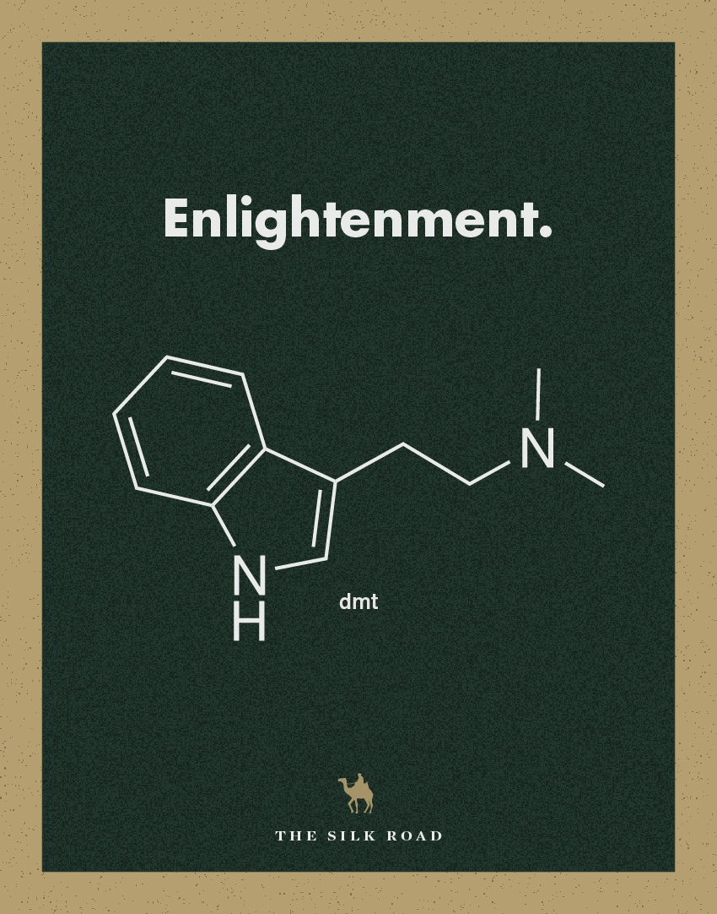
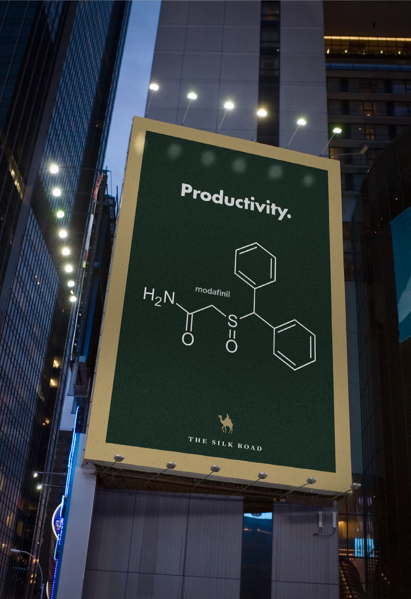
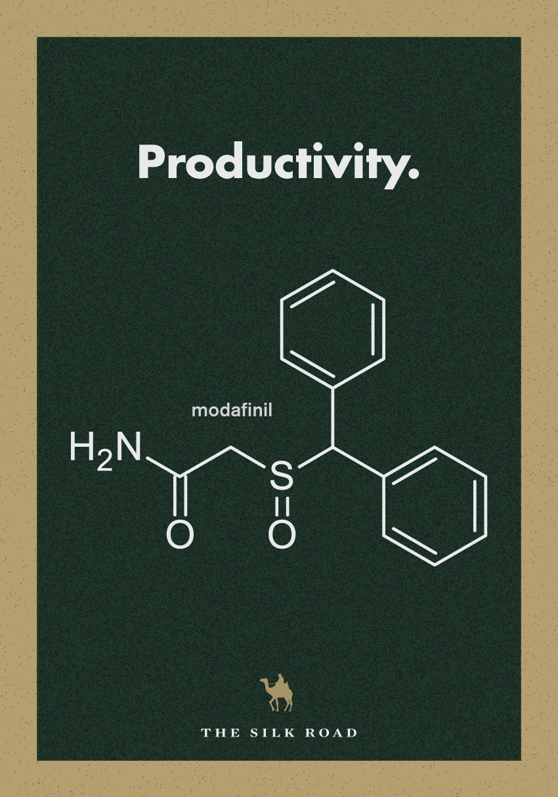
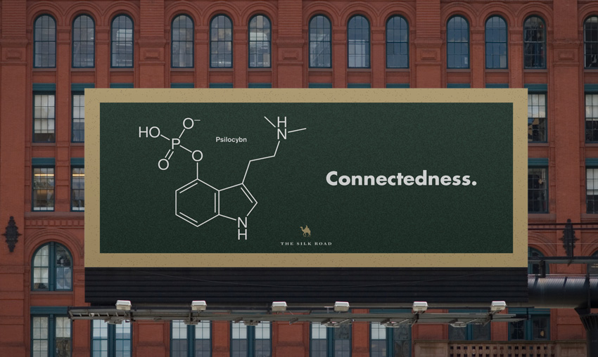
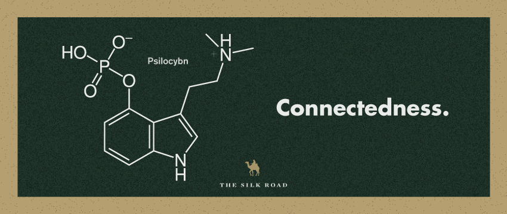
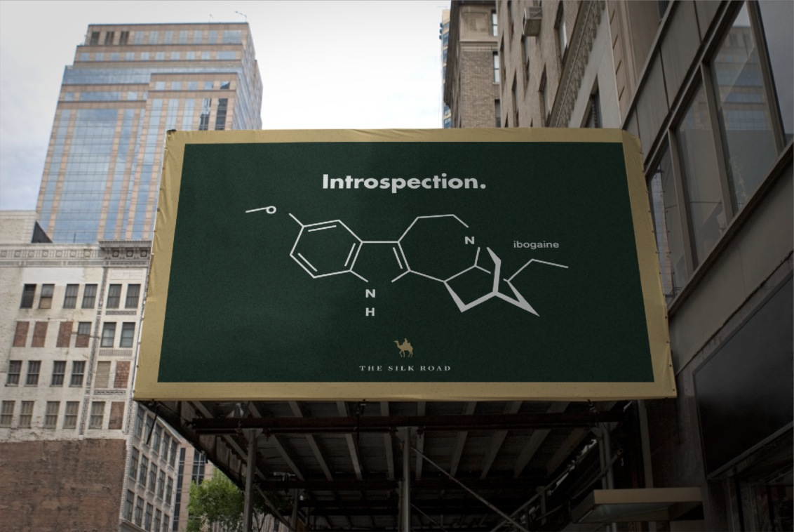
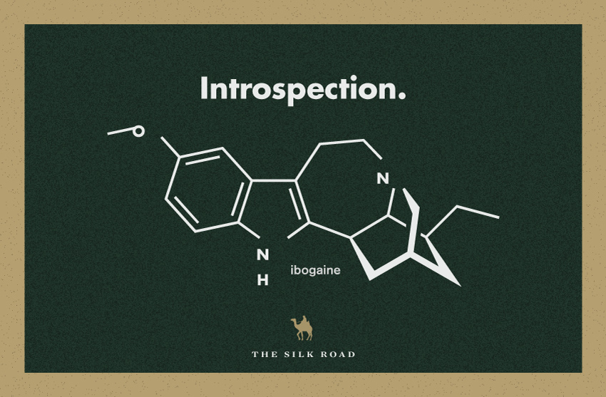
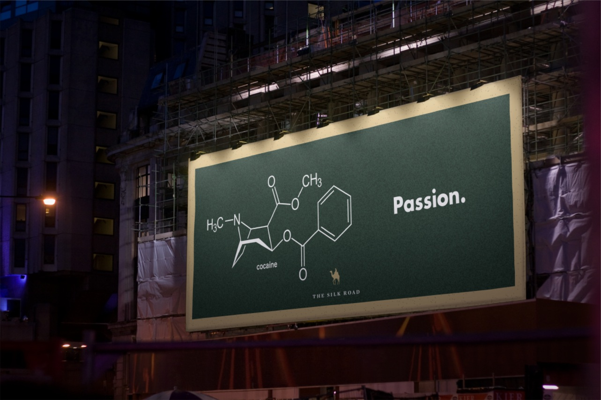
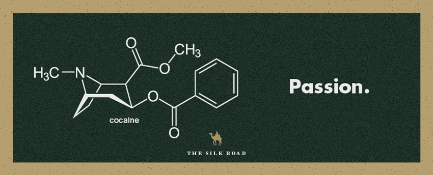
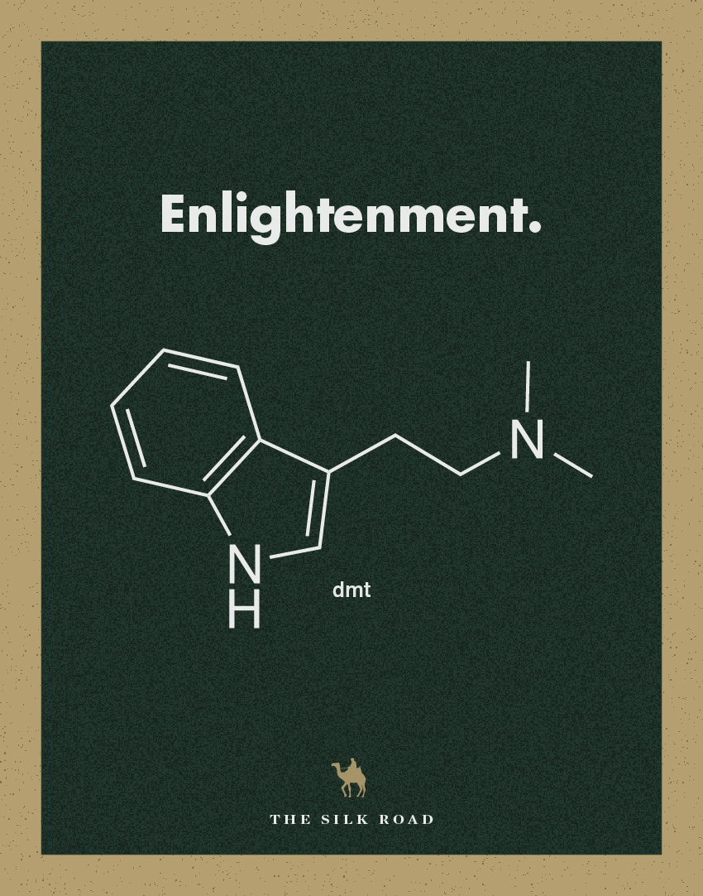
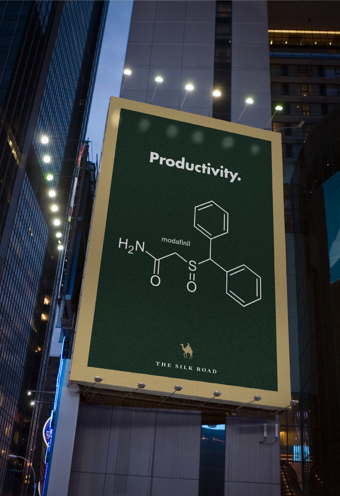
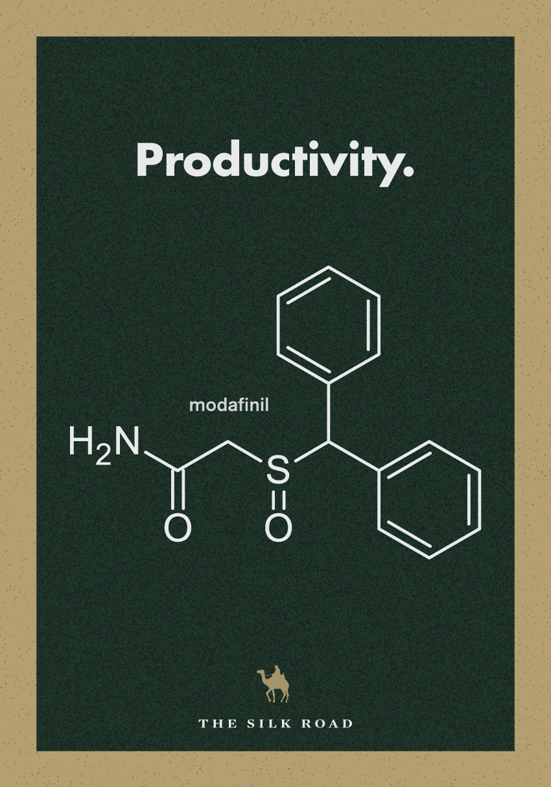
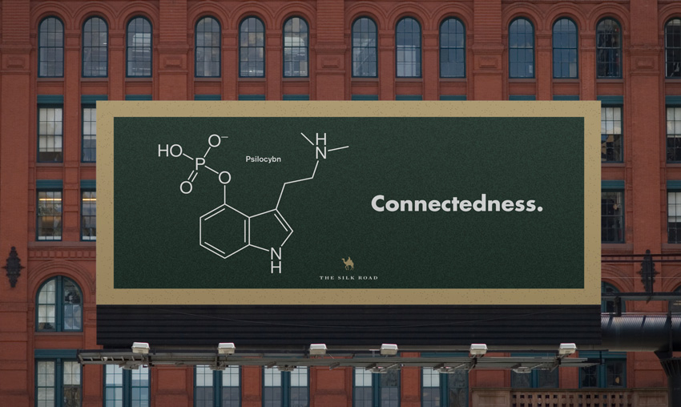
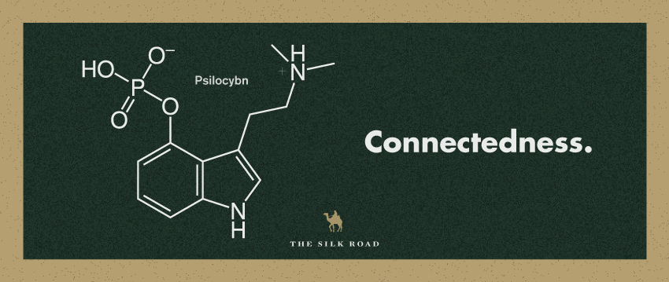
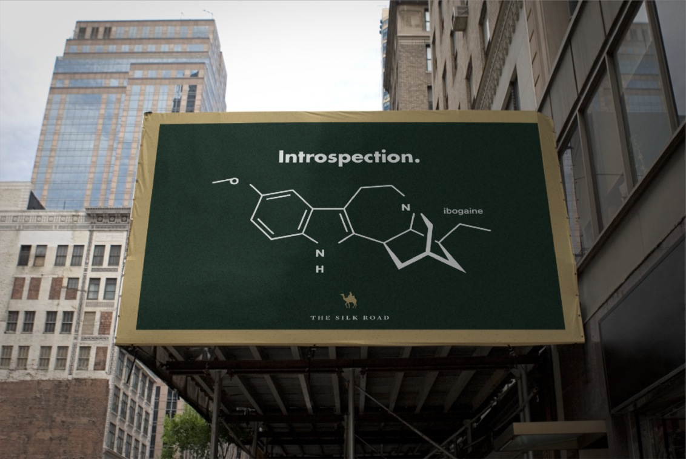
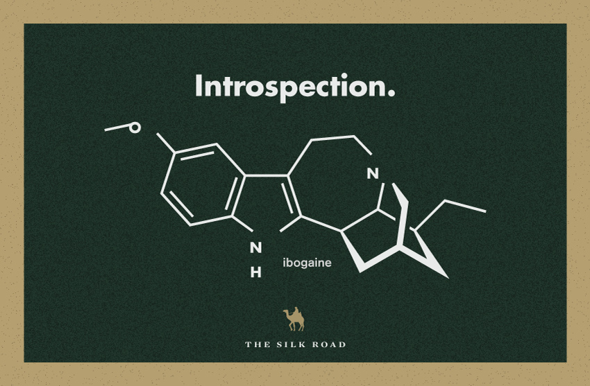
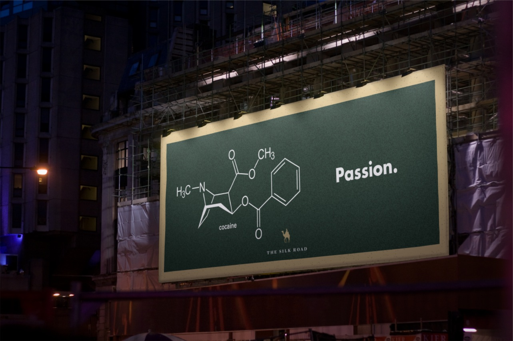
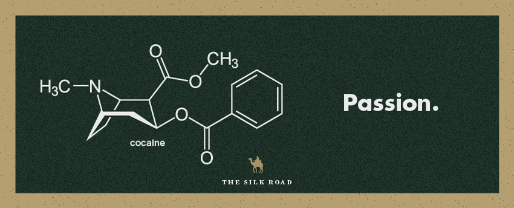
Ad Campaign
Visually simplisctic, yet intellectually complex, this campaign plays on the idea that thoughts and emotions are made from and induced by particular chemicals. Chemicals that can be delivered to your door by The Silk Road.